IPv4 / IPv6 & subnetting
Adressage et découpage des réseaux.
En pratiqueJe développe mes compétences dans les systèmes, les réseaux informatiques, la cybersécurité, la virtualisation, les bases de données et le développement de solutions informatiques.
Je suis étudiant en Systèmes et Réseaux Informatiques avec un intérêt particulier pour les infrastructures réseau, l'administration des systèmes, la cybersécurité, la virtualisation et les technologies informatiques.
Mon objectif est de développer progressivement une expertise technique solide et de transformer les connaissances acquises en solutions concrètes.
ESIG Global Success — Togo
Adressage et découpage des réseaux.
En pratiqueVLAN, trunk, STP et agrégation de liens.
En pratiqueRoutage statique, dynamique et OSPF.
En pratiqueCompréhension des protocoles et couches réseau.
MaîtriséARP, DHCP, DNS et accès SSH.
En pratiqueSimulation de topologies réseau.
En pratiquePrincipes de sécurité et filtrage par pare-feu.
NotionsChiffrement AES/RSA et sécurisation TLS/HTTPS.
En apprentissagePort Security, DHCP Snooping et inspection ARP.
NotionsCapture et analyse du trafic réseau.
En pratiqueCréation de machines virtuelles avec VMware et VirtualBox.
En pratiqueConteneurisation d'applications et d'environnements.
En apprentissageGestion des utilisateurs, services et ressources.
En apprentissageRequêtes, relations et jointures entre tables.
En pratiqueGestion de bases de données relationnelles.
En pratiqueNotions sur MongoDB et Firebase.
NotionsClés et intégrité des données.
En pratiqueIdentification des exigences d'un projet.
En pratiqueModélisation des systèmes d'information.
En pratiqueConception des modèles de données.
En pratiqueTechnologie de réseau local filaire.
En pratiqueWi-Fi, Bluetooth et réseaux mobiles.
NotionsPaire torsadée, fibre optique et liaisons sans fil.
NotionsObjectifs SMART et suivi des tâches avec Gantt.
En pratiqueRépartition des rôles et collaboration.
En pratiqueCes fiches présentent les objectifs, les démarches et les contrôles associés aux travaux pratiques. Les illustrations sont des références à remplacer par mes captures.
ObjectifConstruire un réseau local et attribuer une configuration IP cohérente aux équipements.
DémarcheRelier les postes au commutateur, définir les adresses, les masques et la passerelle.
Outils / commandesPacket Tracer ou terminal, ipconfig, ip addr et ping.
VérificationContrôler les paramètres IP puis tester la communication entre les postes et la passerelle.
Notion cléUne adresse et un masque corrects doivent correspondre au même sous-réseau.
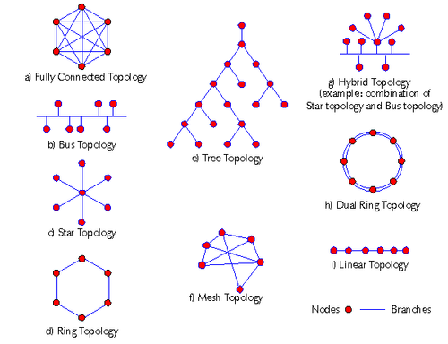
ObjectifSegmenter un réseau local en plusieurs VLAN afin de séparer les domaines de diffusion.
DémarcheCréer les VLAN, affecter les ports d'accès et configurer les liens trunk nécessaires.
Outils / commandesCommutateurs Cisco, vlan, switchport mode access, switchport mode trunk.
VérificationExaminer show vlan brief et show interfaces trunk, puis tester les communications attendues.
Notion cléLes VLAN et les paramètres trunk doivent être cohérents sur les commutateurs reliés.
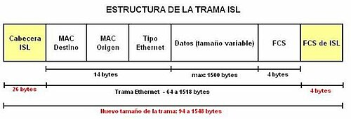
ObjectifPermettre la communication entre plusieurs réseaux IP à l'aide de routes statiques.
DémarcheConfigurer les interfaces des routeurs, renseigner les routes et vérifier les chemins de retour.
Outils / commandesRouteurs Cisco, ip route, show ip route et ping.
VérificationConfirmer la présence des routes dans la table et tester la communication de bout en bout.
Notion cléChaque route doit indiquer le réseau de destination et un prochain saut joignable.
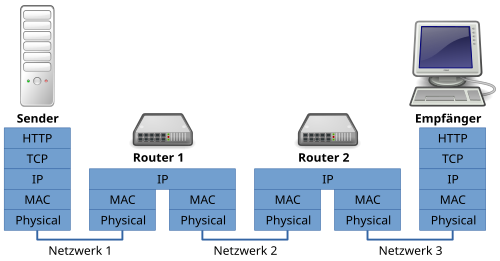
ObjectifMettre en place OSPF pour échanger automatiquement les routes entre plusieurs routeurs.
DémarcheActiver le processus OSPF, annoncer les réseaux et contrôler la formation des voisinages.
Outils / commandesrouter ospf, network, show ip ospf neighbor et show ip route ospf.
VérificationVérifier les adjacences OSPF et la présence des routes apprises dans la table de routage.
Notion cléLes interfaces, zones et paramètres OSPF doivent être compatibles entre voisins.
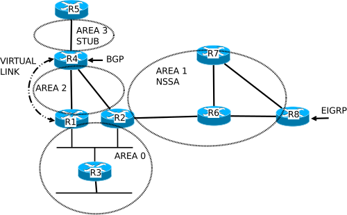
ObjectifConfigurer l'adressage IPv6 et assurer la communication entre les équipements du réseau.
DémarcheAttribuer des préfixes IPv6, activer le routage si nécessaire et définir les passerelles.
Outils / commandesipv6 address, ipv6 unicast-routing, show ipv6 interface brief et ping.
VérificationContrôler les adresses et tester la connectivité IPv6 entre les différents segments.
Notion cléUn préfixe correctement défini et une passerelle adaptée sont essentiels au routage IPv6.
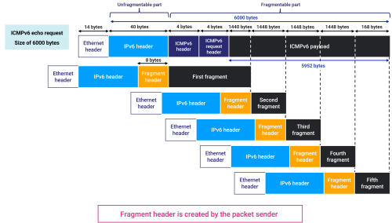
ObjectifAgréger plusieurs liens physiques pour augmenter la capacité et la résilience d'une liaison.
DémarcheFormer un EtherChannel avec des ports compatibles et choisir un protocole comme LACP.
Outils / commandeschannel-group 1 mode active et show etherchannel summary.
VérificationContrôler que le port-channel est actif et que les liens membres sont bien agrégés.
Notion cléLes ports membres doivent avoir des paramètres compatibles, notamment vitesse, mode et VLAN.
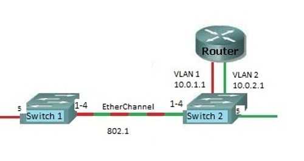
ObjectifAdministrer un système Linux : comptes, groupes, permissions et services.
DémarcheCréer des utilisateurs, gérer leurs droits et contrôler les services ainsi que la configuration réseau.
Outils / commandesadduser, usermod, chmod, systemctl et ip addr.
VérificationTester les accès avec les comptes concernés et vérifier l'état des services configurés.
Notion cléAppliquer le principe du moindre privilège et vérifier les droits après chaque modification.
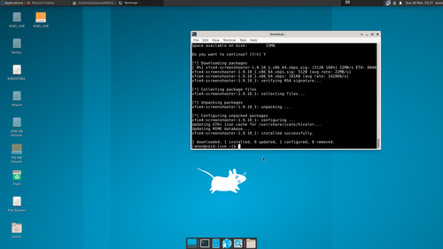
ObjectifCréer une machine virtuelle pour installer et tester un système isolé de l'ordinateur hôte.
DémarcheChoisir les ressources, installer le système invité et configurer son mode d'accès au réseau.
Outils / commandesVirtualBox ou VMware, image ISO et paramètres de carte réseau virtuelle.
VérificationDémarrer la machine, contrôler l'installation et tester l'accès réseau selon le mode choisi.
Notion cléLe mode NAT facilite l'accès sortant ; le mode pont place la VM sur le réseau local.
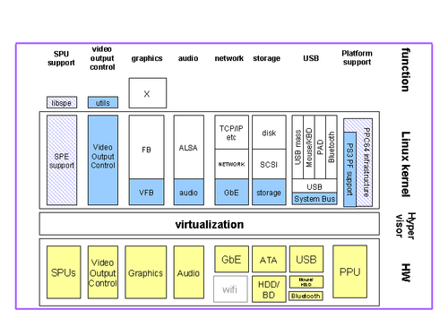
ObjectifConcevoir une base relationnelle et interroger les données avec SQL.
DémarcheCréer les tables, définir les clés et contraintes, puis insérer et interroger des données.
Outils / commandesCREATE TABLE, INSERT, SELECT, JOIN et un SGBD comme MySQL ou PostgreSQL.
VérificationExécuter des requêtes de sélection et contrôler les relations ainsi que l'intégrité des données.
Notion cléLes clés primaires et étrangères structurent les relations et limitent les incohérences.
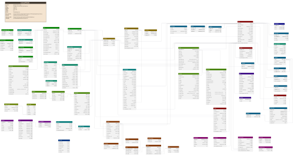
ObjectifRestreindre les flux réseau à l'aide de règles de filtrage adaptées au besoin.
DémarcheDéfinir les sources, destinations et protocoles autorisés, puis appliquer les règles sur l'interface appropriée.
Outils / commandesACL Cisco, access-list, show access-lists et tests ping ou applicatifs.
VérificationTester séparément les flux autorisés et bloqués, puis contrôler les compteurs des règles.
Notion cléL'ordre des règles compte ; prévoir une règle explicite pour chaque flux nécessaire.
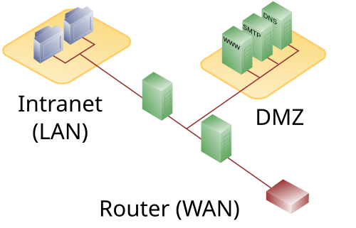
ObjectifCréer et exécuter un conteneur pour isoler le déploiement d'une application.
DémarcheTélécharger une image, lancer le conteneur, publier un port et consulter son état.
Outils / commandesdocker pull, docker run -d -p, docker ps et docker logs.
VérificationVérifier que le conteneur fonctionne et accéder au service depuis le port publié.
Notion cléLe port hôte doit être correctement relié au port utilisé par l'application dans le conteneur.
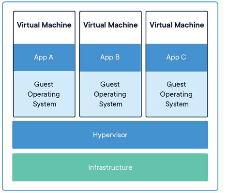
ObjectifAnalyser un besoin et représenter les données et les acteurs d'un système d'information.
DémarcheRecueillir les règles métier, identifier les entités et construire les modèles conceptuel et logique.
Outils / méthodesMERISE, MCD, MLD et diagrammes UML selon le besoin étudié.
VérificationComparer le modèle aux règles métier et contrôler les cardinalités ainsi que les dépendances.
Notion cléChaque entité, relation et cardinalité doit traduire une règle métier clairement définie.
Un projet personnel de téléphonie IP et deux pistes de projets à réaliser.
DescriptionDéploiement d'une solution de téléphonie IP libre pour gérer plusieurs utilisateurs et leurs appels.
ObjectifInstaller Asterisk sur Ubuntu 22.04, configurer des comptes PJSIP, organiser les utilisateurs et définir un dialplan.
TechnologiesAsterisk, Ubuntu 22.04, SIP/PJSIP, Zoiper et Linphone.
CompétencesAdministration Linux, réseau IP, configuration SIP, plan de numérotation et sécurisation des communications.
Tests prévusAppels audio et vidéo entre softphones ; captures et résultats à ajouter après validation.
StatutPiste à réaliser
DescriptionConcevoir un petit réseau d'entreprise séparant les utilisateurs et les services exposés dans une DMZ.
ObjectifCréer plusieurs VLAN, mettre en place le routage inter-VLAN et filtrer les flux avec des ACL.
TechnologiesCisco Packet Tracer, commutateurs, routeur, VLAN 802.1Q et listes de contrôle d'accès.
CompétencesAdressage IP, segmentation, routage, filtrage et diagnostic réseau.
Validation prévueTester les communications autorisées et vérifier le blocage des flux interdits ; ajouter les captures après réalisation.
VisuelIllustration de principe, pas une capture de réalisation.
StatutPiste à réaliser
DescriptionEmpaqueter une petite application web dans un conteneur et la rendre accessible sur le réseau local.
ObjectifCréer une image avec un Dockerfile, lancer le conteneur, publier un port et documenter son démarrage.
TechnologiesLinux, Docker, Dockerfile, Nginx et Docker Compose.
CompétencesConteneurisation, gestion des ports, réseau Docker, consultation des journaux et documentation.
Validation prévueAccéder à la page web, contrôler le conteneur avec docker ps et consulter ses journaux ; ajouter les captures après réalisation.
VisuelIllustration de principe, pas une capture de réalisation.
Découverte des concepts fondamentaux.
Compréhension du fonctionnement des systèmes et réseaux.
Mise en pratique à travers les TP et projets.
Développement progressif de mes compétences techniques.
« Chaque projet et chaque difficulté rencontrée m'ont permis de mieux comprendre les technologies que j'étudie. »
Mon objectif est de continuer à développer mes compétences dans les systèmes, les réseaux, la cybersécurité et les infrastructures informatiques afin de devenir un professionnel capable de concevoir, administrer, sécuriser et maintenir des environnements informatiques fiables.